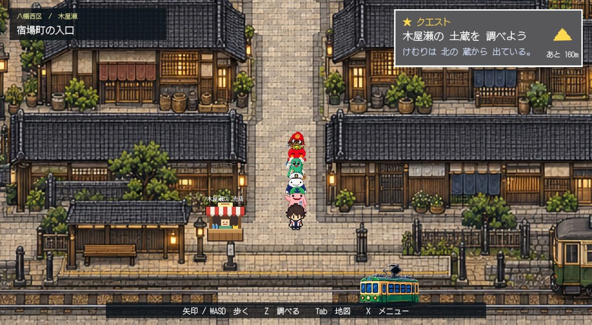
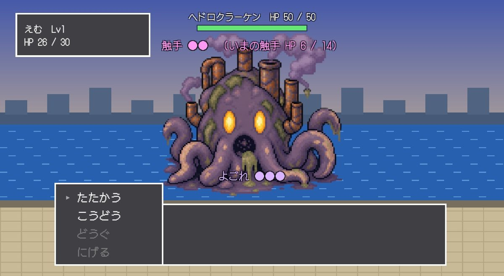
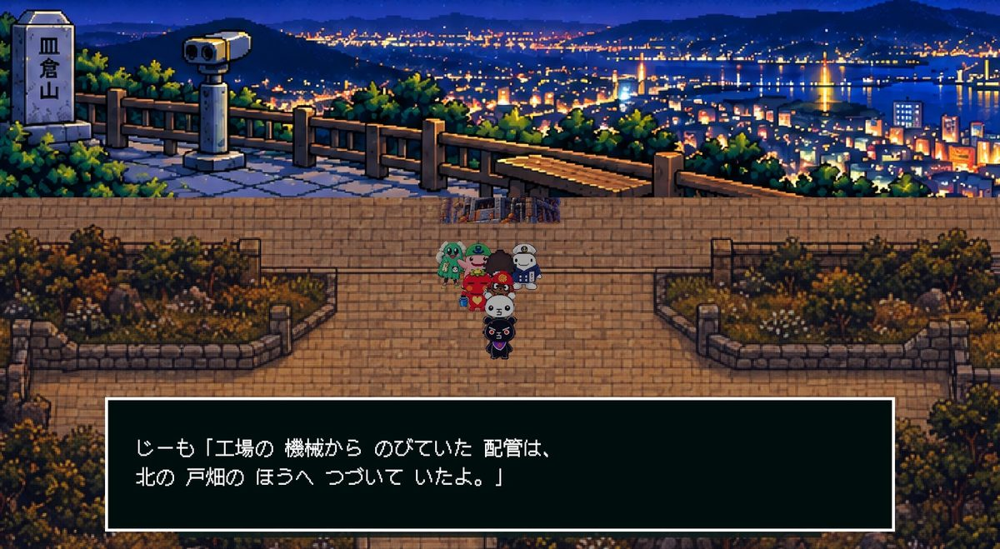
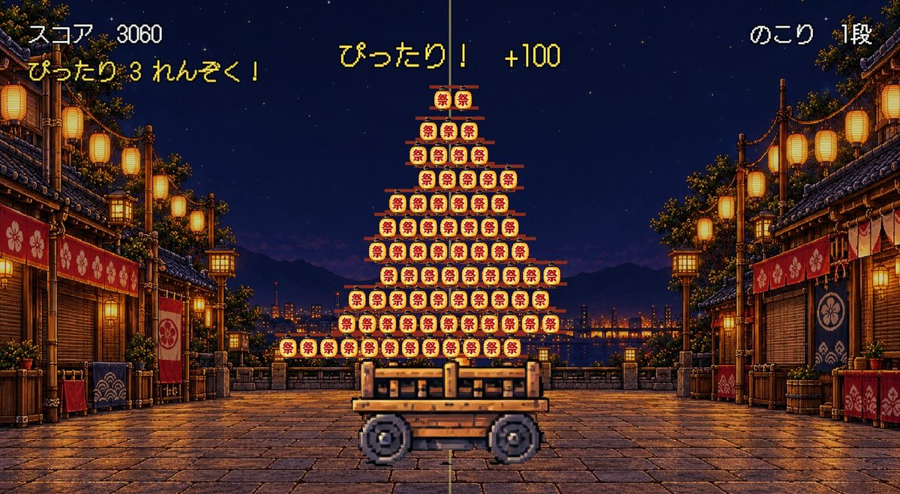
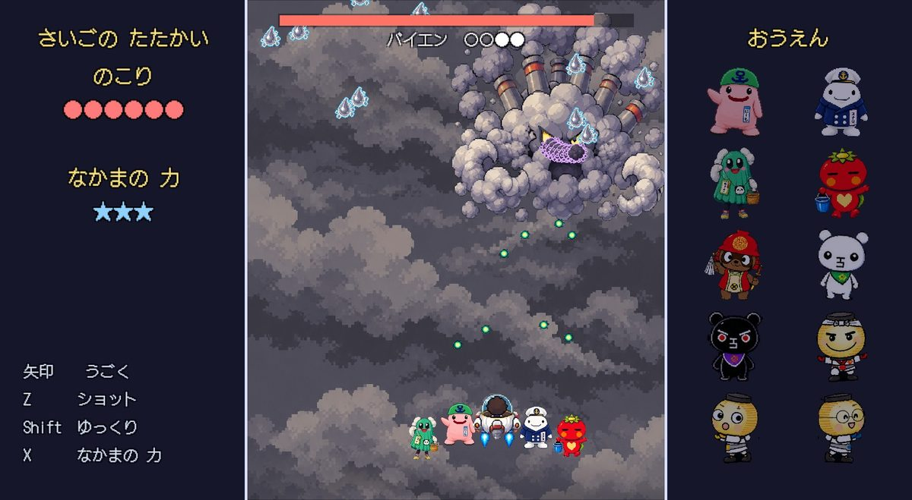

どんな ゲーム？
ある日、北九州の 空が 灰色の けむりに おおわれた。
海には ヘドロ、町には けむりの モンスター。北九州の なかまたちと いっしょに、7つの区を すくいに 出かけよう！
みどころ
7つの区を めぐる 冒険
門司港レトロ、平尾台の 鍾乳洞、皿倉山の 夜景、小倉城……。ほんものの 北九州を モデルに した 町を 歩けます。
- 門司区
- 小倉南区
- 若松区
- 八幡西区
- 八幡東区
- 戸畑区
- 小倉北区
なかまと いっしょに 戦う
北九州の キャラクターたちが なかまに なります。モンスターは たおすのでは なく、「じょうか」して もとの すがたに もどします。
区ごとの ミニゲーム
ちょうちん積み、ケーブルカーの シューティング、太鼓の リズム、さいごの 弾幕バトル。区ごとに ちがう あそびが まっています。
名物と まめちしき
売店では 区ごとの 名物を 買えます。漢字には ぜんぶ ふりがなが ついているので、小学生でも 読めます。
スクリーンショット





トレーラー
あそびかた
| ←↑↓→ / WASD | 歩く・えらぶ |
|---|---|
| Z / Enter | 話す・調べる・決定 |
| X | メニュー・もどる |
| Tab | 地図 |
| Esc | 北九州マップへ もどる |
あそぶ 前に
- 日本語入力を「英数」に して ください。ひらがな入力の ままだと、キーが きかないことが あります。
- ゲームが 始まったら、画面を 1回 クリック してから あそんでください。音も そこから 鳴ります。
- 最初の 読みこみに すこし 時間が かかります（約100MB）。2回目からは 速くなります。
- セーブは この ブラウザの 中に のこります。ブラウザの 履歴を 消したときや、シークレットモードでは 消えてしまいます。
セーブすると でる 「ふっかつのじゅもん」を メモして おけば、タイトルから つづきを 始められます。 - スマホや タブレットでは あそべません。パソコンで あそんでね。
クレジット
- 舞台
- 門司区・
小倉南区・ 若松区・ 八幡西区・ 八幡東区・ 戸畑区・ 小倉北区 - 絵
- ChatGPT
- フィールド
- Codex
- プログラム効率化
- Claude
- 音楽
- Suno
- スペシャルサンクス
- キャラクター関係者の みなさん